Pasporty slovenských měst: bez pasportu (nahoře, modře) a s pasportem (dole, červeně)
Řez zleva (A) doprava (B), ±10 m podél ulice, 10 px = 1 m. Silné čáry = okraje vozovky, tenké = ostatní hranice, žlutá = střed řezu, * = odhad. Ortofoto © GKÚ Bratislava, NLC (ZBGIS, CC BY 4.0).
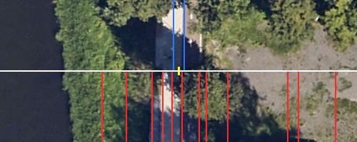
vl2 · (bez názvu) (vilnius)
odhad z OSM: stezka_sdilena 1.5
mapa povrchů Vilniusu: zelen 3.45 · plocha 3.55 · zelen 1.5 · chodnik 1.35 · cyklostezka 1.35 · cyklostezka 2.45 · zelen 0.95 · stromorad 3 · plocha 8.44 · stromorad 1.5 · plocha 5.18
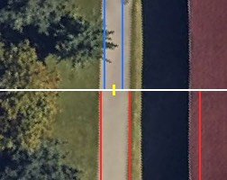
vl3 · (bez názvu) (vilnius)
odhad z OSM: chodnik 2
mapa povrchů Vilniusu: chodnik 3.25 · zelen 7.75
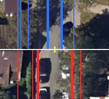
vl5 · (bez názvu) (vilnius)
odhad z OSM: plocha 0.6 · stromorad 1.5 · chodnik 3.9 · obsluzna 2.75 · chodnik 2.5
mapa povrchů Vilniusu: stromorad 3 · chodnik 1 · obsluzna 6.85 · chodnik 1.85
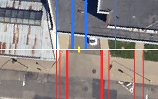
vl6 · (bez názvu) (vilnius)
odhad z OSM: chodnik 3.2 · obsluzna 2.75 · chodnik 6
mapa povrchů Vilniusu: plocha 0.7 · chodnik 1.45 · obsluzna 6.95 · chodnik 1.55 · zelen 5.2 · chodnik 1.65
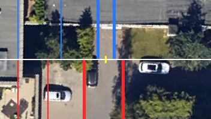
vl7 · (bez názvu) (vilnius)
odhad z OSM: plocha 7.25 · chodnik 6 · obsluzna 2.75
mapa povrchů Vilniusu: plocha 5 · chodnik 6 · obsluzna 6.5
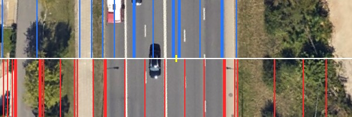
vl9 · Ukmergės g. (vilnius)
odhad z OSM: nezname 5.9 · zelen 7.3 · chodnik 2 · zelen 1.9 · chodnik 2 · bus_cyklo 3.33 · pruh 3.33 · pruh 3.33 · delici 1 · pruh 3.67 · pruh 3.67 · chodnik 2.5
mapa povrchů Vilniusu: zelen 0.7 · chodnik 0.85 · zelen 0.45 · pruh 4.2 · zelen 0.65 · zelen 2.85 · zelen 2.4 · plocha 0.55 · chodnik 2.65 · zelen 2.05 · pruh 3.38 · pruh 3.38 · pruh 3.38 · pruh 3.38 · pruh 3.38 · pruh 3.38 · chodnik 1.75 · plocha 0.5 · zelen 6.35 · zelen 4.85 · zelen 3.95 · zelen 9.37
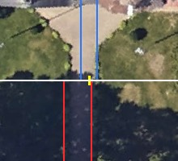
vl10 · (bez názvu) (vilnius)
odhad z OSM: chodnik 2
mapa povrchů Vilniusu: chodnik 3.35
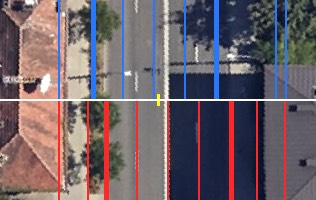
vl11 · Šeimyniškių g. (vilnius)
odhad z OSM: chodnik 3.4 · pruh 3.09 · pruh 3.09 · pruh 3.09 · pruh 3.09 · chodnik 6 · plocha 0.95
mapa povrchů Vilniusu: chodnik 2.89 · stromorad 1.81 · pruh 3.12 · pruh 3.12 · pruh 3.12 · pruh 3.12 · chodnik 2.6 · zelen 2.85
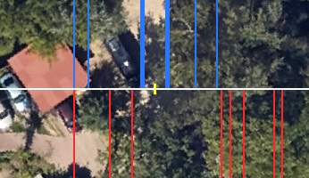
vl13 · (bez názvu) (vilnius)
odhad z OSM: plocha 1.65 · chodnik 6 · obsluzna 2.75 · plocha 3.2 · chodnik 2.49
mapa povrchů Vilniusu: chodnik 4.05 · zelen 2.5 · chodnik 10 · zelen 1 · chodnik 1.5 · zelen 3.35 · nezname 0.9
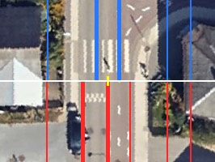
vl16 · Giedraičių g. (vilnius)
odhad z OSM: chodnik 6 · pruh 2.75 · chodnik 6 · plocha 2.9
mapa povrchů Vilniusu: chodnik 4.4 · pruh 3.15 · cyklostezka 2.75 · chodnik 4.65 · zelen 2.85
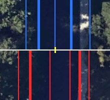
vl17 · Rasų g. (vilnius)
odhad z OSM: chodnik 2.5 · pruh 3.25 · pruh 3.25 · chodnik 3.75
mapa povrchů Vilniusu: nezname 2.25 · pruh 4 · pruh 4 · krajnice 1.95 · chodnik 1.85
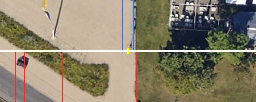
vl18 · (bez názvu) (vilnius)
odhad z OSM: chodnik 2
mapa povrchů Vilniusu: chodnik 1.68 · zelen 7.5 · chodnik 14.4
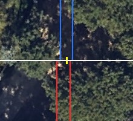
vl19 · (bez názvu) (vilnius)
odhad z OSM: chodnik 2
mapa povrchů Vilniusu: chodnik 2.25
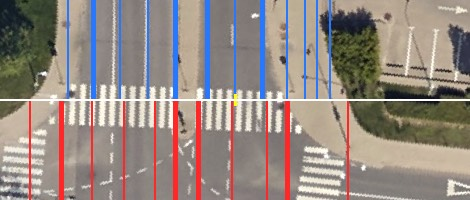
vl22 · (bez názvu) (vilnius)
odhad z OSM: chodnik 2.5 · pruh 2.75 · pruh 2.75 · pruh 2.75 · delici 3.2 · pruh 2.75 · pruh 2.75 · chodnik 2.5 · plocha 1.75 · cyklostezka 1.25 · cyklostezka 1.25
mapa povrchů Vilniusu: chodnik 3.05 · pruh 3.15 · pruh 3.15 · pruh 3.15 · parkovani 2 · chodnik 2.25 · pruh 3.45 · pruh 3.45 · parkovani 2 · stezka_sdilena 6.1
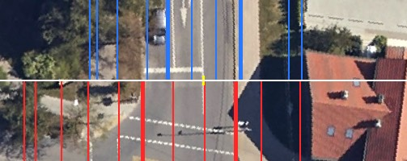
vl24 · Upės g. (vilnius)
odhad z OSM: plocha 0.95 · chodnik 2.5 · plocha 3.65 · chodnik 2.5 · pruh 3 · pruh 3 · pruh 3 · chodnik 6 · plocha 1.6
mapa povrchů Vilniusu: zelen 1.4 · zelen 3.15 · zelen 3.3 · chodnik 3.85 · zelen 2.9 · pruh 3.83 · pruh 3.83 · pruh 3.83 · chodnik 3.2 · zelen 4.75
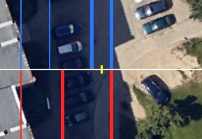
vl26 · (bez názvu) (vilnius)
odhad z OSM: plocha 4.1 · chodnik 6 · obsluzna 2.75
mapa povrchů Vilniusu: chodnik 5.95 · obsluzna 6.95
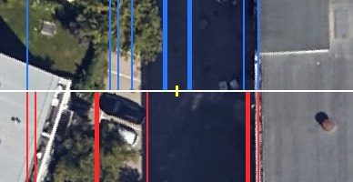
vl27 · (bez názvu) (vilnius)
odhad z OSM: plocha 9.05 · chodnik 0.92 · stromorad 1.5 · chodnik 3.58 · obsluzna 2.75 · chodnik 6 · plocha 1.6
mapa povrchů Vilniusu: plocha 0.95 · chodnik 6.65 · parkovani 5.6 · obsluzna 11 · chodnik 1.2
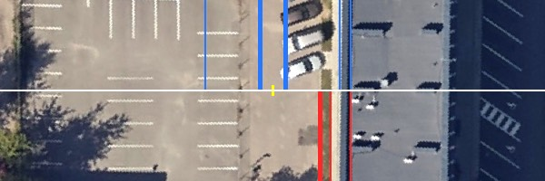
vl28 · (bez názvu) (vilnius)
odhad z OSM: chodnik 6 · obsluzna 2.75 · chodnik 6 · plocha 1.2
mapa povrchů Vilniusu: obsluzna 42.15 · zelen 1.2 · chodnik 2.15
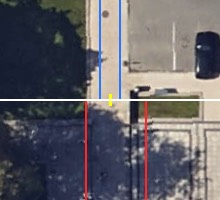
vl29 · (bez názvu) (vilnius)
odhad z OSM: chodnik 2
mapa povrchů Vilniusu: chodnik 6
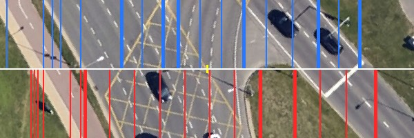
vl31 · Žalgirio g. (vilnius)
odhad z OSM: zelen 5.34 · cyklostezka 1.25 · cyklostezka 1.25 · zelen 2.85 · plocha 5.95 · pruh 3 · pruh 3 · delici 2.2 · pruh 3.15 · pruh 3.15 · pruh 3.15 · plocha 3.3 · zelen 3.85 · plocha 3.7 · pruh 3 · pruh 3
mapa povrchů Vilniusu: zelen 9.47 · chodnik 0.5 · plocha 0.5 · chodnik 0.8 · cyklostezka 3.95 · zelen 1.45 · chodnik 0.6 · pruh 3.63 · pruh 3.63 · pruh 3.63 · pruh 3.63 · pruh 3.63 · pruh 3.63 · pruh 3.63 · zelen 5 · pruh 3.75 · pruh 3.75 · krajnice 4.2 · zelen 9.9 · chodnik 1.4
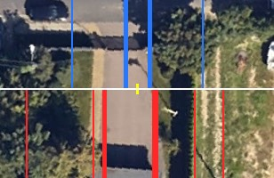
vl32 · (bez názvu) (vilnius)
odhad z OSM: chodnik 6 · obsluzna 2.75 · chodnik 6
mapa povrchů Vilniusu: zelen 7.45 · chodnik 1.2 · obsluzna 5.65 · zelen 0.35 · chodnik 4.25 · plocha 3.15
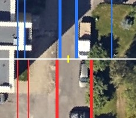
vl35 · (bez názvu) (vilnius)
odhad z OSM: plocha 1.15 · chodnik 6 · obsluzna 2.75 · chodnik 6
mapa povrchů Vilniusu: zelen 1.8 · chodnik 4.75 · obsluzna 5.85
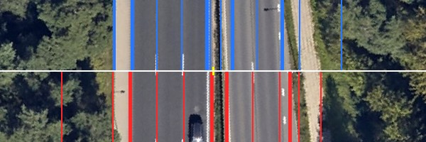
vl36 · Geležinio Vilko g. (vilnius)
odhad z OSM: zelen 0.23 · chodnik 2.35 · pruh 3.5 · pruh 3.5 · pruh 3.5 · plocha 0.55 · zelen 1.45 · plocha 1.6 · pruh 3.5 · pruh 3.5 · chodnik 2.5 · nezname 5.9 · zelen 12.06
mapa povrchů Vilniusu: plocha 13.67 · zelen 7.2 · chodnik 2.4 · pruh 3.83 · pruh 3.83 · pruh 3.83 · zelen 2.1 · pruh 3.75 · pruh 3.75 · krajnice 1.45 · zelen 1.3 · chodnik 3.1 · zelen 16.3 · plocha 3.48
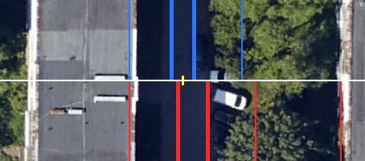
vl37 · (bez názvu) (vilnius)
odhad z OSM: chodnik 5.2 · obsluzna 2.75 · chodnik 6
mapa povrchů Vilniusu: chodnik 6 · obsluzna 3.65 · chodnik 6 · plocha 10.6
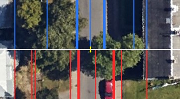
vl39 · D. Poškos g. (vilnius)
odhad z OSM: plocha 6.45 · chodnik 6 · pruh 2.75 · pruh 2.75 · chodnik 6 · plocha 2.6
mapa povrchů Vilniusu: plocha 3.4 · chodnik 0.65 · plocha 7.1 · chodnik 1.6 · pruh 3.57 · pruh 3.57 · chodnik 1.65 · zelen 5
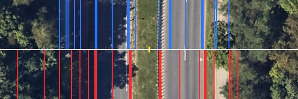
vl40 · T. Narbuto g. (vilnius)
odhad z OSM: nezname 1.3 · chodnik 0.4 · cyklostezka 1.25 · cyklostezka 1.25 · chodnik 3.1 · pruh 3.25 · pruh 3.25 · plocha 1.5 · zelen 4.9 · plocha 1.95 · pruh 3.25 · pruh 3.25 · chodnik 2.5 · plocha 0.4 · chodnik_kola 2.5
mapa povrchů Vilniusu: zelen 7.85 · plocha 5.35 · zelen 3.1 · chodnik 2.45 · cyklostezka 1.68 · cyklostezka 1.68 · zelen 1.4 · pruh 3.5 · pruh 3.5 · zelen 6.05 · pruh 4 · pruh 4 · krajnice 1.05 · zelen 1.85 · chodnik_kola 3.1 · plocha 0.45 · zelen 1.2